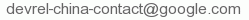

Angular 开发组的致辞
这是 Angular 开发组的项目经理（TPM）Naomi Black 和工程总监（Engineering Director）Brad Green 代表官方开发组发来的致辞，这标志着 angular.cn 正式获得了官方身份。如文档中的其它地方一样，点击任意中文即可显示原文。
Welcome to angular.cn!
欢迎光临angular.cn！
This official site and the developer guides you will find here are the result of hard work and dedication by members of Angular's Chinese developer community. More than just a linguistic translation, this site was localized and updated by developers who use and know Angular, and understand the concepts as engineers. Led by friends Zhicheng WANG (Ralph), Zhimin YE (Rex) Lin YANG (todoubaba), united by a commitment to open source software and helping developers, the angular.cn team is motivated by the desire to make Angular more accessible to the millions of Chinese-speaking developers worldwide.
这份官方网站和开发指南的中文版是中国的 Angular 开发者社区共同努力奉献的成果。他们来自深谙 Angular 设计理念的工程师，故此，这份中文版不仅是语言上的简单汉化。出于对“开源精神”和“共享精神”的执着与推崇，汪志成、叶志敏和杨林共同带领angular.cn团队奋力工作，力争让全世界的中文开发者与Angular实现零距离的亲密接触。
This Chinese version of angular.io is also the first official release of Angular's developer content in any language other than English!
除英文版之外，该中文版是第一个由官方正式发布的开发文档！
As a champion of open technology, Google has invested a lot and will continue to invest in the advancement of Angular, for the benefits of our users in China and around the world.
作为开源技术的倡导者，Google 已经并将继续投资于对 Angular 的完善和演进工作，造福并回馈中国区的用户以及全世界的用户。
We are happy to see that Angular’s Chinese developer community has grown to its current large size, fueled by not only the passion for technologies among developers, but also by the desire to make this technology effective for real businesses. Many companies in China have already built their businesses based on Angular technology. We hope that the updated materials on this official site will continue to inspire and help putting this technology into more real world business services and applications in China. If your business already runs on Angular, we invite you to join our developer community here, and become involved in our effort in continuing improving and enhancing this technology. We welcome your comments and suggestions at any time. Please send your remarks to Google Developer Relations China team’s contact email at: .
看到中国的 Angular 开发社区已经如此繁荣，我们非常高兴。这不仅仅是出于开发者对技术的固有热情，更是因为我们希望“用 Angular 高效实现商业需求”的宏伟愿景。事实上，许多中国公司的业务早已基于 Angular 技术。我们希望通过对官网内容的持续更新，鼓励并协助大家把 Angular 更多的应用于现实世界中的业务服务与应用程序。如果您的业务大厦已经构建在 Angular 的基础之上，我们欢迎您加入中文社区，参与到我们持续增强和优化此项技术的努力中来。我们随时欢迎您的意见和建议，请发邮件到Google的技术推广部联系我们，我们的邮箱是。
Angular succeeds because it is built by and for developers who come from many different backgrounds. We hope that these materials will help you to learn and understand Angular, and to contribute back to the framework in future. We are excited to see what you will build with Angular here in China, and how the framework itself will change as the result of your enthusiasm.
Angular 的成功，是因为它由背景各异的开发者所创造，它为开发者而生。我们希望这些文档能帮助大家学习和理解 Angular，总有一天，大家还会为这个框架做出贡献。我们非常期待看到大家用各种方式应用 Angular 技术，更希望看到 Angular 在所有开发者的热情支持下继续演进。
We also hope that through Angular.cn, you will discover more about the wide variety of web and mobile technologies from Google and the open source world, and how to leverage many Google platforms for your future business success.
通过angular.cn，我们希望广大的开发者们能继续发掘更多来自 Google 和开源世界的 Web 技术和移动技术，借助 Google 提供的平台登上业务成就的新高度。
We are happy to have you here. Welcome.
非常高兴在这里遇见你们。Google 欢迎你！
Naomi Black and Brad Green
Naomi Black与Brad Green
栾跃代表 Google 开发技术推广部的致辞
这是开发技术推广部的主管栾跃发来的致辞。该部门也会安排专人来全职运营 Angular 中文社区，包括组织线上线下的活动、对外合作等。希望大家多多捧场。
Hello to Developer Friends of the Angular.CN community!
angular.cn社区的开发者朋友们，大家好！
On behalf of Google Developer Relations China team, we warmly welcome you here! We are very glad to see the partnership and collaboration with the Angular developer community in China, and we hope that through the partnership with the developer friends at the Angular.CN community, our collaborations will be increased in the future.
我谨代表谷歌公司开发技术推广部(Developer Relations)中国团队热烈欢迎你！ 我们非常高兴和中国的Angular开发者社区在这里的合作，也希望通过这个合作和Angular.CN社区的开发者朋友们扩大未来更多的合作和分享。
This Chinese Angular website, represents a great idea and model for collaboration. It not only has the Angular resources and updates that are the results of Google investment, but also the results from many Chinese localizations done by the many volunteers here for the larger developer users out there. These localized resources from the efforts from these volunteers, will help more developers in China to learn and adopt Angular technologies. We very much appreciated these contributions and the efforts in sharing. It is this kind of spirit and practices that resulted in the vibrant Internet we have today. We salute to all these volunteers, and at Google we will continue our support to open source technologies and communities as we have been doing.
这个 Angular 中文网站的大量资源，体现了一个很好的合作模式和精神。它不仅有谷歌公司投资所推动的 Angular 技术的资源和更新，更是有众多中国的技术爱好者和开发者们通过自己的无私义务劳动为广大开发者们所做的技术资料的中文本地化翻译工作的成果。这些志愿者们辛勤劳动所带来的中文资源，将帮助更多的中国开发者们能够方便地学习和采纳Angular技术。我们非常赞赏这样的奉献精神和分享实践，正是这样的精神和实践才造成了互联网今天的兴旺发展。我们向所有的志愿者们致敬，谷歌公司也将一如既往地继续支持开源代码技术和社区的发展。
Let us enjoy the process of innovating through this model of sharing and collaboration!
让我们大家通过更多的分享和合作，一起快乐创新！
Bill Luan, Greater China Regional Lead, Developer Relations, Google
谷歌开发技术推广部 大中华区主管 栾跃
关于中文版
这是一份跟官方网站保持 同步更新 的中文版。虽然保持同步非常耗费精力，不过为了防止过时的内容误导读者，这份额外的付出还是很值得的。
我们全文采用意译的方式，在确保理解作者意思的前提下用中文重新表述，力求做到“信雅达”，当原文难以直译时更是如此。在必要时，我们会加“译注”来辅助读者阅读。 当然，即便如此，我们理解错误的可能性也还是有的，所以我们的译稿都提供了中英文对照，如果你对某些语句有疑问，只要点一下它，就可以显示对应的英文版内容，读者可自行对照理解。
对于英文词汇，我们尽量采用业内成熟的译法，以利于口头交流。对少部分在 Angular 之外比较罕见的专有名词，我们会在译文中写成中英双语。 这部分做了初步的梳理，但是仍可能有遗漏，如果你发现哪里有问题，请到我们的github上提出 issue 或 Pull Request 。
同时，要注意：我们只翻译 “TypeScript” 版的文档，其它语言的版本大同小异，可以在看懂 TypeScript 版之后再对照看 JS 和 Dart 的英文版。不过我们还是建议你试用一下 TypeScript 。
授权方式
本文档遵循“保持署名—非商用”创意共享4.0许可证（CC BY-NC 4.0）授权方式，你不用知会我们就可以转载，但必须保持署名（特别是：链接到 https://angular.cn，并且不得去掉本页入口链接，也不得修改本页内容），并且不得用于商业目的。如果需要进行任何商业推广，请接洽 Google 开发技术推广部，我们将给出积极的回应。
本文档首发于 Angular 中文网。如果你要进行转载，请自行同步，不过小心别 DDoS 了我们。
关于我们
三位译者汪志成、叶志敏和杨林的简介请参见这里。
Angular 中文社区的简介和更多资源请参见这里。
工作预告
将来，Google 技术推广部还会有一系列线上和线下推广工作，如果您有意为这些活动贡献力量，请接洽Google 开发技术推广部。